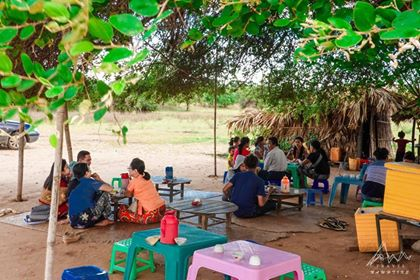

ပုဂံမြို့ဟောင်းအတွင်း အရှေ့တောင်ဘက် ထောင့်မှာ တည်ရှိပါတယ်။ သဗ္ဗညုဘုရားဟာ အလောင်းစည်သူမင်းရဲ့ ကောင်းမှု့တော်ဖြစ်ပါတယ်။ အလောင်း စည်သူမင်းသည် မြတ်စွာဘုရားအား ဝိသာခါ ဆောက်လုပ် လှူဒါန်းခဲ့သည့် ပုဗ္ဗာရုံ ကျောင်းတော်ပုံစံ ဂူဘုရား တည်လိုခဲ့သည်။ အလောင်းစည်သူသည် ၎င်း၏ဆန္ဒကို သံဃာတော် များကို လျှောက်ထားခဲ့ရာ သံဃာတော်များ ကလည်း သဘောတူညီ သည့်အတွက် သဗ္ဗညု (သိစပ်မြင်နှံ) ဘုရားကို တည်ခဲ့သည်ဟု အဆိုရှိသည်။ ပုဂံတစ်ဝိုက်မှာ ထုထည်ကြီးမားလှပြီး ဉာဏ်တော်အမြင့်ဆုံး ဂူဘုရားကြီးဖြစ်တာမို့ အဝေးတစ်နေရာကနေ ကြည့်ရင်တောင် ထင်ရှားပေါ်လွင်လှပါတယ်။ ထု-ဓမ္မရံ ၊ ဉာဏ်- သဗ္ဗညု ၊ အနု-အာနန္ဒာ၊ တန်ခိုး-ရွှေစည်းခုံ ဟူသော အဆိုအရ သဗ္ဗညု ဘုရားသည် ပုဂံဒေသရှိ ရှေးဟောင်း သာသနိက အဆောက်အဦ များအနက် ဉာဏ်တော် အမြင့်ဆုံးဖြစ်ကာ (၆၄)မီတာ (၂၁၀)ပေ မြင့်သည်။ သဗ္ဗညုဘုရားသည် ဝတ်ပြု ကိုးကွယ်ရန် သက်သက်သာ မဟုတ်ဘဲ ရဟန်း သံဃာောတ်များ သီတင်းသုံးရန် ကျောင်းအဖြစ် လည်းကောင်း၊ ပိဋိကတ်တိုက် အဖြစ် လည်းကောင်း အသုံးပြု ခဲ့ကြသည်။ သဗ္ဗညုဘုရားတွင် မူလက နံရံဆေးရေး ပန်းချီများ ရှိခဲ့သော်လည်း ဘုရား အတွင်းပိုင်းကို ထုံးသုတ်ခဲ့ ကြသည့်အတွက် ရှေးဟောင်း ပုဂံခေတ်လက်ရာ နံရံဆေးရေးပန်းချီများ ပျက်စီးသွား ခဲ့ပြီဖြစ်သည်။ ယခုအခါ မြေညီထပ်ရှိ အနောက်ဘက် ဂန္ဓကုဋီတိုက် ပေါင်းကူး မျက်နှာကြက် တွင် ပန်းခက်၊ ပန်းနွယ်ပုံ၊ ပန်းဒီဇိုင်းများနှင့် နံရံတွင် သစ်ရွက်ပုံ ပန်းတန်းများ read detail
 ရွှေစည်းခုံ စေတီတော် သည် ညောင်ဦးမြို့ မှ အနောက် တောင် ယွန်းယွန်း၊ မိုင်ဝက် ခန့် ဧရာဝတီ မြစ် ကမ်းနဖူးရှိ ပေ ( ၇၅၀ )ကျော်ခန့် ရှည်လျား ကျယ်ဝန်း သော မဟာရံ တံတိုင်းကြီး နှင့် ဉာဏ်တော်ပေ ( ၁၆၀ )၊ ဖိနပ်တော် အကျယ်ပေ ( ၁၆၀ )ပမာဏ ရှိကာ ရွှေရောင် ဝင်းလျက် တင့်တယ် ကြည်ညို ဖွယ် တည်ရှိ လေသည်။ ပုဂံမင်း နှစ်ပါး တည်ခဲ့ ပြီး၊ သိမှတ်ဖွယ် ရာ၊ အံ့ဘွယ်များ ကြောင့် အထူး ကျော်ကြား သည်။
ပုဂံ ပြည့်ရှင် သီရိ အနုရုဒ္ဓ ဒေဝ ခေါ် အနော်ရထာ မင်း လက်ထက်တွင် သီဟိုဠ်ကျွန်း ၏ ဘုရင် ပထမ ဝိဇယဗာဟု မင်းကြီး ၏ အကူအညီ တောင်းခြင်း ကြောင့် ရဟန်း သံဃာတော်များ၊ ပိဋကတ် သုံးပုံ ကျမ်းစာ များ နှင့် ဆင်ဖြူတော် တစ်စီး တို့ကို အကူအညီ ပေးခဲ့ သည်။ ပထမ ဝိဇယဗာဟု မင်း ကလည်း အနော်ရထာ မင်း ၏ ကျေးဇူး ကို တုံ့ပြန်သော အားဖြင့် မြတ်စွာ ဘုရား ၏ စွယ်တော် ပွား ကို အနော်ရထာ မင်း ထံ ဓမ္မ လက်ဆောင် ပြန်လည် ပေးပို့ ခဲ့သည်။ အနော်ရထာ မင်းကြီး သည် စွယ်တော်မြတ် ကို နန်းတော် ရှေ့ ရတနာ ပြဿာဒ် တွင် ကိန်းဝပ် စေပြီး ပူဇော် ဝတ်ပြု ခဲ့သည်။ ထိုအခါ မင်းဆရာ ဖြစ်သော ရှင်အရဟံ မထေရ် က သတ္တဝါ အားလုံး ကိုးကွယ် နိုင်စေရန် စေတီ တည်ပါ ဟု မင်းကြီး အား အကြံဉာဏ် ပေးခဲ့ သည်။ အနော်ရထာ မင်း လည်း ရှင်အရဟံ မထေရ်၏ အကြံဉာဏ် မှာ အလွန် လှော်ကန် သင့်မြတ် သည့် အတွက် စေတီ တည် ၍ တည်ထား ကိုးကွယ် ရန် ဆောင်ရွက် ခဲ့ သည်။ မင်းကြီး သည် စွယ်တော် ကိန်းဝပ် လိုသော အရပ်တွင် ဆင်ဖြူတော် ရပ်စေ သတည်း ဟု အဓိဌာန် ၍ ဆင်ဖြူတော် ၏ ကိုယ် ပေါ်တွင် စွယ်တော် ကြုတ်တင် ၍ လွှတ်လိုက် လေသည်။ ဆင်ဖြူတော် သည် ပုဂံ ၏ အရှေ့မြောက် အရပ် ( ဇေယျ ဘုံ ဟု ခေါ်တွင်သော အောင်မြေ အရပ်၌ ) သဲစည်းခုံ တွင် ဝပ်လေ သည်။ ဆင်ဖြူတော် ဝပ်ရာ သဲစည်းခုံ တွင် စွယ်တော် မြတ် ကို ဌာပနာ ထားပြီ စေတီ read detail
ရွှေစည်းခုံ စေတီတော် သည် ညောင်ဦးမြို့ မှ အနောက် တောင် ယွန်းယွန်း၊ မိုင်ဝက် ခန့် ဧရာဝတီ မြစ် ကမ်းနဖူးရှိ ပေ ( ၇၅၀ )ကျော်ခန့် ရှည်လျား ကျယ်ဝန်း သော မဟာရံ တံတိုင်းကြီး နှင့် ဉာဏ်တော်ပေ ( ၁၆၀ )၊ ဖိနပ်တော် အကျယ်ပေ ( ၁၆၀ )ပမာဏ ရှိကာ ရွှေရောင် ဝင်းလျက် တင့်တယ် ကြည်ညို ဖွယ် တည်ရှိ လေသည်။ ပုဂံမင်း နှစ်ပါး တည်ခဲ့ ပြီး၊ သိမှတ်ဖွယ် ရာ၊ အံ့ဘွယ်များ ကြောင့် အထူး ကျော်ကြား သည်။
ပုဂံ ပြည့်ရှင် သီရိ အနုရုဒ္ဓ ဒေဝ ခေါ် အနော်ရထာ မင်း လက်ထက်တွင် သီဟိုဠ်ကျွန်း ၏ ဘုရင် ပထမ ဝိဇယဗာဟု မင်းကြီး ၏ အကူအညီ တောင်းခြင်း ကြောင့် ရဟန်း သံဃာတော်များ၊ ပိဋကတ် သုံးပုံ ကျမ်းစာ များ နှင့် ဆင်ဖြူတော် တစ်စီး တို့ကို အကူအညီ ပေးခဲ့ သည်။ ပထမ ဝိဇယဗာဟု မင်း ကလည်း အနော်ရထာ မင်း ၏ ကျေးဇူး ကို တုံ့ပြန်သော အားဖြင့် မြတ်စွာ ဘုရား ၏ စွယ်တော် ပွား ကို အနော်ရထာ မင်း ထံ ဓမ္မ လက်ဆောင် ပြန်လည် ပေးပို့ ခဲ့သည်။ အနော်ရထာ မင်းကြီး သည် စွယ်တော်မြတ် ကို နန်းတော် ရှေ့ ရတနာ ပြဿာဒ် တွင် ကိန်းဝပ် စေပြီး ပူဇော် ဝတ်ပြု ခဲ့သည်။ ထိုအခါ မင်းဆရာ ဖြစ်သော ရှင်အရဟံ မထေရ် က သတ္တဝါ အားလုံး ကိုးကွယ် နိုင်စေရန် စေတီ တည်ပါ ဟု မင်းကြီး အား အကြံဉာဏ် ပေးခဲ့ သည်။ အနော်ရထာ မင်း လည်း ရှင်အရဟံ မထေရ်၏ အကြံဉာဏ် မှာ အလွန် လှော်ကန် သင့်မြတ် သည့် အတွက် စေတီ တည် ၍ တည်ထား ကိုးကွယ် ရန် ဆောင်ရွက် ခဲ့ သည်။ မင်းကြီး သည် စွယ်တော် ကိန်းဝပ် လိုသော အရပ်တွင် ဆင်ဖြူတော် ရပ်စေ သတည်း ဟု အဓိဌာန် ၍ ဆင်ဖြူတော် ၏ ကိုယ် ပေါ်တွင် စွယ်တော် ကြုတ်တင် ၍ လွှတ်လိုက် လေသည်။ ဆင်ဖြူတော် သည် ပုဂံ ၏ အရှေ့မြောက် အရပ် ( ဇေယျ ဘုံ ဟု ခေါ်တွင်သော အောင်မြေ အရပ်၌ ) သဲစည်းခုံ တွင် ဝပ်လေ သည်။ ဆင်ဖြူတော် ဝပ်ရာ သဲစည်းခုံ တွင် စွယ်တော် မြတ် ကို ဌာပနာ ထားပြီ စေတီ read detail

...
 ....